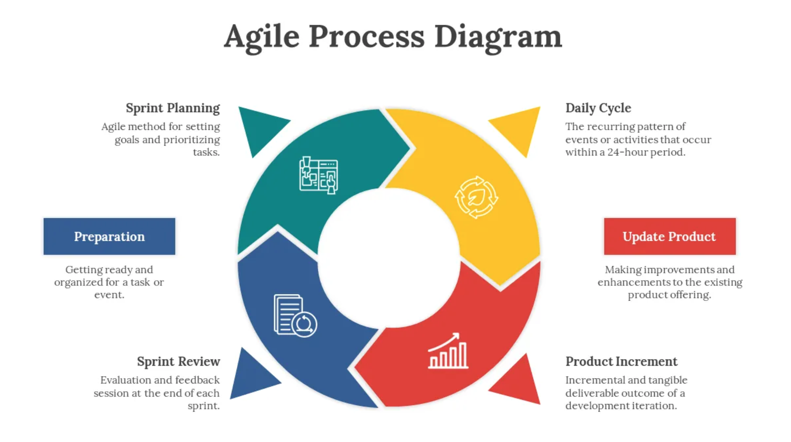
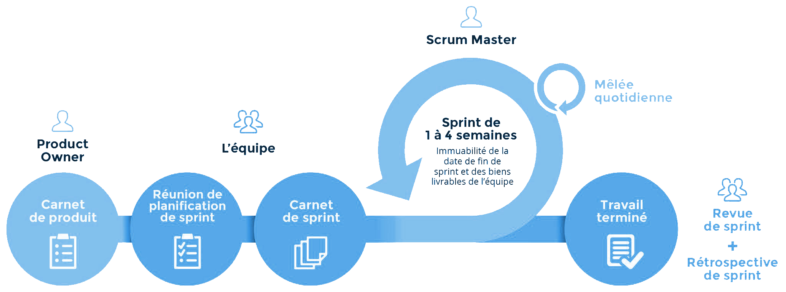

Chapitre 8 : Agile (Scrum, Kanban)
L’Agile = modèle itératif + règles agiles. La philosophie agile place la satisfaction du client au cœur (collaboration, adaptation au changement, livraisons fréquentes). Deux déclinaisons très répandues : Scrum et Kanban.
{kind=link}

L’Agile : un cadre itératif gouverné par des règles et des valeurs.
Agile / Scrum
Scrum = itératif (Agile) + itérations de taille fixe (les *sprints*) + gestion de projet. La satisfaction du client est recherchée à tout prix.
{kind=link}

Scrum : des sprints de durée fixe, rythmés par des cérémonies.
Avantages |
Limites / Défis |
Bon pour |
|---|---|---|
Itérations cadencées et prévisibles ; client réellement impliqué ; gestion de projet intégrée |
Nécessite une équipe bien formée aux cérémonies Agile & Scrum ; risques de hors-périmètre et de hors-délai ⇒ expliquer la méthode au client en amont et pourquoi/comment l’impliquer ; défis propres à l’itératif |
Projets de taille moyenne à grande ; quand garder le client dans la boucle est critique ; projets bien planifiés (livrables + échéances, changements flexibles) ; ERP |
Agile / Kanban
Kanban = itératif (Agile) + gestion d’un *flux continu* (visuel). On fait croître le produit graduellement, en visualisant le travail.
Avantages |
Limites / Défis |
Bon pour |
|---|---|---|
S’adapte à des specs floues au départ ; permet une croissance progressive |
Défis de l’itératif ; devient chaotique sans discipline ⇒ introduire de petites cérémonies (même non conventionnelles) ; demande un engagement de long terme |
Tout projet aux specs peu claires au début ; logiciels d’entreprise en évolution continue, maintenance ; logiciels bureautiques (Word, Excel, …) |
Exercice
Votre groupe développe le préliminaire en Scrum. Proposez un découpage en 2 sprints et listez les cérémonies que vous tiendriez (et avec qui).